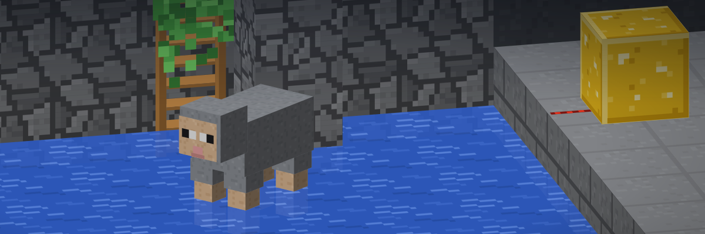

Calibrated decisions for any text
Yes/no, single-choice, rating and multi-label answers, each with a reliable probability.
Capabilities
Options are defined per request, so one model covers routing, triage, moderation, scoring and tagging.
noul
Yes / No
Probability of yes.
choice
Single choice
Best option, with a probability for each.
score
Rating
Expected level on a scale.
multi
Multi-label
Every applicable option, each with its own probability.
Get started
The model downloads from Hugging Face on first use, then runs locally.
Python
pip install transformers torch
from transformers import pipeline ws = pipeline(model="samratduttaofficial/WaterSheep", trust_remote_code=True) ws("I was charged twice.", question="Which team should handle this?", options=["billing", "shipping", "support"])
Download
hf download samratduttaofficial/WaterSheep --local-dir WaterSheep
Or with Git (requires Git LFS):
git clone https://huggingface.co/samratduttaofficial/WaterSheep
Then load it from the folder, offline:
ws = pipeline(model="WaterSheep", trust_remote_code=True)
API
Deploy it as a Hugging Face Inference Endpoint, then:
curl https://YOUR-ENDPOINT -H "Authorization: Bearer $HF_TOKEN" -H "Content-Type: application/json" -d '{"inputs": "I was charged twice.", "parameters": {"question": "Which team should handle this?", "options": ["billing", "shipping", "support"]}}'
JavaScript
<script type="module"> import { decide } from "https://samratduttaofficial.github.io/WaterSheep/watersheep.js"; console.log(await decide("I was charged twice.", "Which team should handle this?", ["billing", "shipping", "support"])); </script>
No install. With a downloaded copy on your web server, call load({ base: "WaterSheep/" }) first.
Design
- Structured. Typed answers, no text to parse.
- Calibrated. Probabilities you can use as confidence scores.
- Open. Code and weights under Apache 2.0, trained on openly licensed data. See NOTICE.
- Portable. Transformers, JavaScript and ONNX.